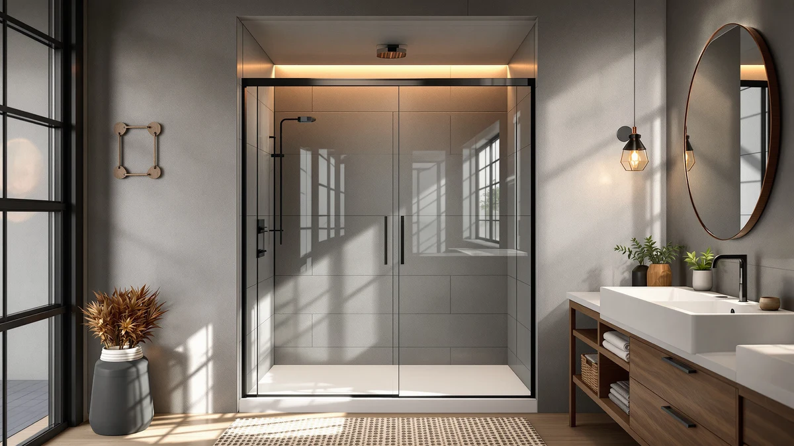

Frameless Glass Shower Door Review (2026): Worth It?
Prices and picks verified as of October 2026. Independent, reader-supported reviews.


Quick Answer
The NGTEEN Frameless Glass Shower Door 56-60" is a solid pick if your rough opening falls inside that four-inch range, since it is both the least expensive and the only frameless design among the four doors in this comparison. At $298.99, it undercuts the aluminum-framed and tub-specific alternatives below while covering a wider adjustment window than any of them.
Our pick: Frameless Glass Shower Door 56-60", $298.99 Check Price on Amazon
Bottom line: our top pick is the Frameless Glass Shower Door 56-60" W x 72" H at $298.99.
Things to Know Before You Buy
- The NGTEEN frameless glass shower door fits a 56-60 inch rough opening, one of the wider adjustment ranges among the four doors in this comparison.
- A frameless glass shower door relies on thicker tempered glass instead of a metal frame to hold its shape, so panel strength and mounting hardware matter more than on a framed door.
- The SierraSquad alternative uses an aluminum frame instead, which usually costs less to manufacture but leaves visible metal trim around the glass.
- None of the four doors covered in this review carry published owner ratings on Amazon yet, so pricing and listed specs are the most reliable comparison point right now.
- Measure your rough opening at the top, middle and bottom before ordering any of these doors, since a 56-60 inch range will not fit an opening outside that window.
This frameless glass shower door review looks at four sliding enclosures priced between $289.99 and $298.99, all built for similar rough-opening widths in a typical US bathroom. Shopping for a shower door without a showroom to walk through means you are mostly comparing listed widths, glass style and price against each other on a screen. Among the four, the NGTEEN 56-60 inch frameless door stands out for covering one of the widest adjustment ranges at the lowest price of the group, and that combination is why it is the door we point to first.
We researched the NGTEEN against the SierraSquad Aluminum Shower Door, the KisaTub Double Sliding Glass Shower Door and the QiangLave Tub Glass Shower Doors, all sized for openings in the same general range. None of the four listings carry published owner ratings yet, so this review leans on manufacturer specifications, current Amazon pricing and the construction details each brand discloses rather than star counts or review totals. Prices across the group sit within nine dollars of each other, so the real differences come down to frame material, panel configuration and the width tolerance each door actually supports.
Why You Should Trust Us
Ilane Tall covers bathroom fixtures and hardware for Best Shower Doors, and this frameless glass shower door review follows the same process used for every door on the site. We start with the manufacturer's published dimensions and materials, confirm current pricing and stock directly from each Amazon listing, and compare those numbers against every door in the same size bracket. We do not run a testing lab, and we have not installed any of these four doors in a bathroom ourselves. What we offer instead is a careful read of each spec sheet and an honest account of what it does and does not tell you. Where a listing has no owner ratings, which is true of all four doors in this comparison, we say so directly instead of inventing feedback that does not exist.
Our Research Experience
We did not install or live with the NGTEEN 56-60 inch door, and this frameless glass shower door review will not pretend otherwise. Our process was to compare the manufacturer's published dimensions, materials and price against the three other doors in this comparison, then verify current Amazon pricing and stock status for each listing. Every detail cited here, the 56-60 inch width range, the $298.99 price and the panel configuration, comes from the product listing itself rather than a guess.
We also checked whether any of the four doors had collected owner reviews on Amazon. None had at the time of writing, so we have not cited star ratings or reviewer quotes anywhere in this piece. A new listing without reviews is not automatically a problem, but it does mean you are relying on the spec sheet rather than other buyers' experience, and we want that tradeoff stated plainly rather than glossed over.
Overview & Specs

Frameless Glass Shower Door 56-60"
What we like
- 56-60 inch adjustable width covers a wider range than the fixed-size doors in this comparison
- Frameless glass panel design, without the visible metal trim of the aluminum alternative
- Lowest price of the four doors we compared, at $298.99
Flaws but not dealbreakers
- No published owner ratings yet on the Amazon listing to weigh against the spec sheet
- Listing does not publish a glass thickness figure, unlike some pricier frameless doors
- 72 inch height is fixed, so it will not suit unusually tall or short shower openings
| Material | — |
| Size | 56-60'' W x 72"H |
The NGTEEN Frameless Glass Shower Door 56-60" is built for a rough opening between 56 and 60 inches wide and 72 inches tall, which covers more ground than the fixed dimensions on the KisaTub and QiangLave doors below. Because it is frameless, the glass panel itself carries the structure instead of a metal frame, a design that generally looks cleaner on the wall but puts more weight on the glass and the mounting hardware. Measure your opening at the top, middle and bottom before ordering, since a 56-60 inch range still will not fit an opening outside that window.
This frameless glass shower door review puts the NGTEEN ahead of the other three mainly on price and fit range. At $298.99, it undercuts the SierraSquad, KisaTub and QiangLave doors by six to nine dollars, while its four-inch adjustment window gives installers more room to work with than a single fixed width. The tradeoff is that the Amazon listing does not yet carry owner ratings, so you are weighing a lower price and wider fit range against a lack of review history, the same tradeoff that applies to all four doors in this comparison.
What We Liked
The width range stands out most. An adjustable 56-60 inch opening gives you four inches of installation room, which matters if your rough opening is not an exact, round number, something common in older houses. The KisaTub and QiangLave doors below do not offer that flexibility.
Price is the second advantage in this frameless glass shower door review. At $298.99, the NGTEEN is the least expensive of the four doors we compared, and it reaches that price while still using a frameless glass design instead of the visible metal trim on the SierraSquad aluminum door.
The frameless look itself is worth noting too. Without a metal frame running around the glass, the panel reads as a single clean surface, which tends to make a shower stall look larger and a bathroom feel less closed in, especially in smaller spaces.
What Could Be Better
The biggest gap is review history. The NGTEEN listing carries no published owner ratings, so there is no buyer feedback to confirm how the hardware holds up after months of daily use. That is true of all four doors in this comparison, but it is still worth weighing before you spend $298.99 on an unreviewed listing.
The listing also does not publish a glass thickness figure, a detail some competing frameless doors disclose and NGTEEN does not. Frameless designs put more load on the glass itself, so thickness is a reasonable question to ask the seller directly before ordering if it matters to you.
Height is fixed at 72 inches with no adjustment on this frameless glass shower door, which works for a standard-height shower but will not help if your ceiling or shower surround falls outside that figure.
Who Is It For?
This door suits a shopper who has measured a rough opening somewhere between 56 and 60 inches and wants a frameless look without paying the premium that heavier, thicker-glass frameless doors often carry. It also suits anyone prioritizing price first, since this frameless glass shower door review found it to be the least expensive of the four doors covered here.
It is not the right pick if your opening falls outside that four-inch window, if you want published owner reviews before buying since this listing has none yet, or if you prefer the visible structure and typically lower glass-load of a framed aluminum door like the SierraSquad.
Alternatives to Consider
Before you commit to the NGTEEN pick in this frameless glass shower door review, here are three doors we researched in a similar price and size bracket. Each uses a different frame or panel design, so compare the details below against your own bathroom rather than assuming any of them are interchangeable.

Editor's Pick
Aluminum Shower Door 60x59 inch
The SierraSquad trades the frameless look for an aluminum frame, which typically adds structural support the NGTEEN relies on the glass alone to provide. At $292.89 for a 60x59 inch opening, it costs slightly less than the NGTEEN, worth a look if you do not mind visible metal trim around the glass.
$292.89
Check Price on Amazon
Best Value
Double Sliding Glass Shower Door
KisaTub's double sliding design splits the opening across two glass panels instead of one large frameless pane. At $289.99, it is the cheapest of the four doors in this comparison, a reasonable trade if a two-panel slider fits your layout better than a single wide pane.
$289.99
Check Price on Amazon
Premium Choice
Tub Glass Shower Doors 56"
QiangLave's 56 inch tub door is built for a bathtub enclosure rather than a stall shower, which matters if you are replacing a curtain over a tub instead of a walk-in opening. It matches KisaTub's $289.99 price while targeting a different installation than the other three doors here.
$289.99
Check Price on AmazonFrequently Asked Questions
What size opening does the NGTEEN frameless glass shower door fit?
NGTEEN specifies a 56 to 60 inch rough opening width and a fixed 72 inch height. Measure your opening at the top, middle and bottom before ordering, since anything outside that four-inch window will not work with this door.
Is the NGTEEN worth $298.99 compared to the other doors in this review?
Among the four doors covered in this frameless glass shower door review, the NGTEEN is both the least expensive and the only one with a frameless design and a wider fit range. If you want a framed look or a two-panel slider instead, the SierraSquad or KisaTub are worth comparing first.
How does the NGTEEN compare to the QiangLave tub door?
The QiangLave Tub Glass Shower Doors 56 inch is built for a bathtub enclosure, while the NGTEEN is sized for a stall shower opening. Choose based on which fixture you are covering rather than price alone, since both sit within a few dollars of each other.
Final Verdict
The bottom line on this frameless glass shower door review: the NGTEEN Frameless Glass Shower Door 56-60" is worth $298.99 if your rough opening measures between 56 and 60 inches and you want a frameless look at the lowest price among the four doors we compared. If your opening falls outside that range, if you want visible frame support, or if you are covering a tub rather than a stall shower, the SierraSquad, KisaTub or QiangLave doors researched above are the better starting points.